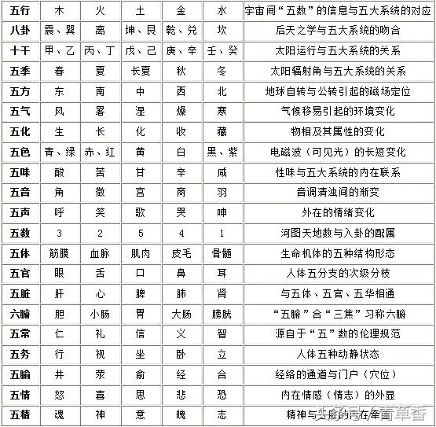
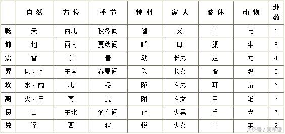
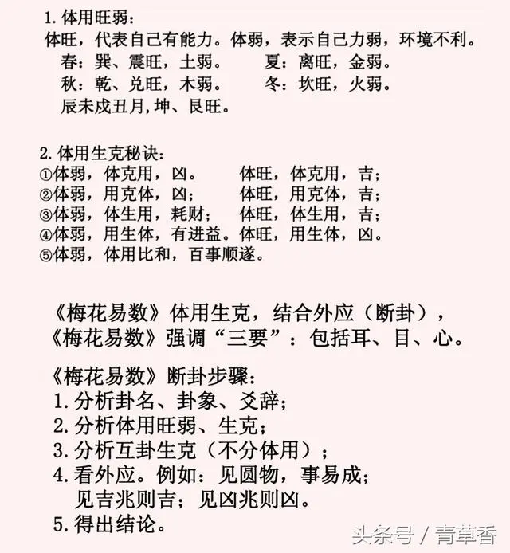

梅花易数断卦方法（附带外应口诀）
非原创，原创链接
梅花易数基础知识
一、五行生克
金生水，水生木，木生火，火生土，土生金。
金克木，木克土，土克水，水克火，火克金。

三、卦气旺衰
震、巽木旺于春衰于秋；离火旺于夏衰于冬；乾、兑金旺于秋衰于夏；
坎水旺于冬衰于辰、戌、丑、未月（农历三六九十二月）；坤、艮旺于辰、戌、丑、未月衰于春。
四、十二地支五行属相
子—水—鼠，丑—土—牛；寅—木—虎；卯—木—兔；辰—土—龙；巳—火—蛇；
午—火—马；未—土—羊；申—金—猴；酉—金—鸡；戌—土—狗；亥—水—猪。

梅花易数起卦法
1、年月日时起卦：
即以农历之年月日总和除以八，以余数为卦数求上卦;以年月日时总和除以八，以余数为卦数求下卦，再以年月日时总和除以六，以余数为动爻。
例：农历壬申年四月十一日巳时起卦：申年9数，巳时6数。
上卦为：（年＋月＋日）÷8，取余数。 即：（9＋4+11）÷8，余数为8为坤卦。
下卦为：（年＋月＋日＋时）÷8，取余数。 即：（9+4+11+6）÷8，余数为6为坎卦。
动爻数为：（年＋月＋日＋时）÷6，取余数。 即：（9+4+11+6）除以6，余数为6，动爻为6爻。
此卦为：上卦为坤，下卦为坎，动爻为六爻。
2、直接以数起卦
这是一种简便而准确率极高的起卦方法。当有人求测某事时，可以让来人随意说出两个数，第一个数取为上卦，第二个数取为下卦，两数之和除以6，余数为动爻，或者可以随便借用其他能得到两数的办法起卦，如翻书、日历等等。
3、端法后天起卦
端法后天起卦法是以’八卦万物属数为上卦，以后天八卦方位下卦’,即以物或人所取之象为上卦，以其所在后天八卦方位之卦为下卦，以上、下卦数加时数除以6，余数取动爻。这种方法经常使用。
4、按声音起卦
凡闻声音，数得声数起作上卦，加时数配作下卦。如动物鸣叫声，叩门声，别人说话声皆可起卦。若所闻声音中有一间隔，可以把间隔前声数取作上卦，把间隔后声数取作下卦，以上下卦数加时辰数取动爻。
5、按字的笔划数或字数起卦
字少时，,按笔画数，字多时，可用字数起卦。
凡见字数，如停匀，即平分一半为上卦，一半为下卦。如字数不匀，即少一字为上卦，取’天轻清’之义；以多一字为下卦，取’地重浊’之义。
6、丈尺寸起卦
凡数皆可起卦，丈尺，尺寸皆为数，亦可起卦。
丈尺之物，以丈数为上卦，尺数为下卦，合丈尺之数取爻（数寸不系）。
尺寸之物，以尺数为上卦，寸数为下卦。合尺，寸之数，加时数取爻。分数不用。
7、起卦加数法
按年月日时起卦，一个时辰之内，只有某一特定的卦象，在同一时辰内，可能有多人来占问，不能以同一卦象断事，或有多人同来问同一件事者，亦不能以同一卦象论之。为解决这一问题，可用加姓氏笔划数的方法，进行起卦决之。
8、物数占
凡见有可数之物，即以此物起作上卦，以时数配作下卦，即以卦数并时数，总数除以六，取动爻。
9、为人占
凡为人占，其例不一。或听语声起卦，或观其人品，或取诸身，或取诸物，或因其服色、触其外物，或以年、月、日、时，或以书写来意。
听其语声音，如或一句，即如其字数分之起卦。如语两句，即用先一句为上卦，后一句为下卦。语多，则但用初听一句，或末后所闻一句，余句不用。
观其人品者，如老人为乾，少女为兑之类。
取诸其身者，如头动为乾，足动为震，目动为离之类。
取诸其物者，如人手中偶有何物，如金玉及圆物之属为乾，土瓦及方物之属为坤之类。
因其服色者，如其人青衣为震，赤衣为离之类。
触其外物者，起卦之时，见水为坎卦，见火为离卦之类。
以年、月、日、时者，即以求问时之年月日时起卦。
书写来意者，其人来占，或写来意，则以其字占之。
10、自己占
凡自己欲占，以年、月、日、时，或闻有声音，或观当时有所触之外物，皆可起卦。
11、占动物
凡占群物之动不可起卦。如见一物，则就此物为上卦，物来之方位为下卦，合我卦数及方位卦数加时数取爻。以此卦总断其物。如后天占牛鸣鸡叫之类。又凡、牛、马、犬、猪之类，初生，则以初生年、月、日、时占之。又或置买此物，亦可以初置买之时推之。
12、占静物
凡占静物，有如江河山石，不可起卦。若至屋宅树木之类,则屋宅初创之时，树木初置之时，皆可起卦。至于器，则置成之时可占，如枕椅之类是矣。余则无故不占。若《观梅》，则见雀争枝坠地而占；《牡丹》，则自有问而占；《茂树》，则枝枯自坠而后占也。
断卦方法
一、体、用、变卦及断卦
成卦之后，应把卦分为三种，即本卦、互卦、变卦。再根据动爻区分出体卦、用卦，动爻所在的卦为用卦，另一个为体卦，这就明了一体一用。
根据八卦之五行，明确生克比和之理，这对于看用卦及体卦的关系非常重要。而互卦、变卦属于用卦的一部分，体卦与用卦、互卦、变卦的关系，就是内卦的体用关系。还要看外部的预兆，即应卦，而应卦也属于体用卦的一部分，再加上内卦的体用关系，这就是综合内外卦的体用关系。
然而在具体的占卜过程中，并不仅仅看体卦、用卦的关系，而是要看所有卦与体卦的关系（这些卦包括本卦、用卦、互卦、变卦，也包括方位、声音、言语、地理、天时之类的应卦）。即所谓的体一用百，体用关系一明确，就可以根据体用关系来预测事物的吉凶。
事物的发生和发展往往是吉凶参半，并非一帆风顺的，因而其过程难免是复杂的。要达到知其过程这一步，除明了简单的体用生克关系、明了外应对于体用的关系外，还必须明了如下原则，即“生体多者则愈吉，克体多者则愈凶。然有此卦生体，诸卦克此卦者，颇减其吉。然有此卦克体，诸卦克此卦者吉”。生生克克的关系非常复杂，弄懂这些复杂生生克克的关系，对于正确预测非常重要。
二、先、后天卦定应期的方法
先天卦定应期的方法与后天卦定应期的方法不同。
用先天起卦法断卦定应验之期，常常用卦气来确定。如果是乾卦，因为乾属金，那么应期应定在庚日，辛日或五行中属金的日子(如申日，酉日)。或者乾之应期应定在戌日，亥日，因为乾在八卦方位中为西北方，而戌，亥亦在西北方。或者兑之应期应定在酉日酉时。再比如，震、巽之应期当定于甲日，乙日，以及五行中属木的日子(如寅日，卯日)。或者震卦之应期应定在卯日卯时，巽卦之应期应定在辰日辰时，等等。
后天起卦法断卦定应验之期则多以卦数加时数来定，又根据当时求卜者当时行、卧、坐、立的姿态或者求占者心情的迟缓与急速的情况，来确定事物的应验之期。用卦数加时数来定应期的方法，是在近期而不是应在长远之期的，就没有必要断为长远之期。有许多复杂情况，必须综合先天卦数与后天卦数来断定应期，亦不可执于一端。
三、占断总诀
大抵梅花易数预测的方法，是在成卦之后，按照如下步骤进行的：
首先，看《周易》的卦辞、爻辞，根据卦爻辞来助断吉凶。如占得乾卦初九爻动，其爻辞是“潜龙勿用”，那么就可以说什么事情都难以有所作为，应该等待时机，伺机而为。如占得乾卦九二爻动，其爻辞是“见龙在田，利见大人”，那么就可以宜于拜谒贵人。其他卦爻辞皆可根据此类规则而推断。
其次，区分卦之体用，以体用五行生克比和关系来推断吉凶。体用即指动静之说，即根据动爻来区分体卦、用卦。体卦为主、为自已，用卦为次、为所占之事或所占之人。用卦生体卦，或体用比和，则所谋吉利，体卦生用卦，或者用卦克体卦，所谋之事不吉，难以办成之象。
再次，通过克应来助断吉凶。所谓克应，即成卦或析卦的过程中所出现的外界事物的突然变化，即所谓外应，古人认为这些细微变化亦预示了事物变化发展的趋势。比如，听到有人说吉利的话语，或看到某些好兆头，就是吉利的先兆，可以断为吉。听到有人说凶恶的话语，或看到某些凶恶的兆头，则可断为不吉而凶。如果见到圆物，则预示事情容易办成功，如果见到残缺，损坏了的物体，则预示事情不顺，最终不成。
最后，根据占卜时卜者的动静状况来确定应验之期。如果是坐着求占的，则表示应期较迟；如果是在行走过程中求占的，则表示应期较短，所占问的事情会迅速完成。如果是在跑动或近乎跑的过程中问占的，则表示事成或事败更为迅速；如果是在躺着的状态下求占的，则表示所占问的事情的成败最为迟缓。
对以上几种情况都予以考察，就完全可以掌握占卜的道理。
在占断的过程中，必须以易卦为主，克应作为占断的辅助。如果易卦和克应都很吉利，那么所占问的事情会大吉大利。如果两者有一凶一吉，那么必须详细地审查卦辞、爻辞的吉凶，以及体用生克比和的具体状况和克应所预示的吉凶涵义，综合来断吉凶。总之，占卜的关键就在于圆融变通，最忌胶柱鼓瑟、偏执一端。
四、占断论理诀
梅花易数预测的理论固然确切精当，但必须用“理”来阐释它，必须义理象数结合，才能算是完备。如果只讲数的推算而不讲事物之常理，则往往偏于一端、拘其一见，而难以达到灵验的目的。比如占问饮食时起得震卦，从卦象来看震可为龙，但就饮食而言，从常理来看，龙是一种不可得到的神物，与饮食无关，应当以鲤鱼之类取而代之。又比如占天时起得震卦，从卦象来看震占天时应有雷声，但若在冬天占天时起得震卦，以常理而论之，冬天不可能有雷声，应当断为狂风呼啸而树撼物动、飞沙走石之类的情形。
梅花易数预测占卜决断吉凶祸福，固然以体卦用卦之生克比和关系为主，但也有不按照体用之生克比和关系来决断吉凶的。比如在《梅花易数》起卦例中的“西林寺额占”中，起得山地剥卦，体卦、用卦、互卦、变卦五行俱属土，俱为比和，按说应为大吉之象，然而仍然断为不吉，这是为什么呢？因为寺庙本来是纯阳之人居住的地方，应显现纯阳之象，但所起之卦却是阴爻、阴卦居多，阴气过盛之象，故对寺庙不利。象这样的道理已经非常明显，因而也就没有必要拘执体用，而可以直接据理而断，不能偏于一见，执其一端，而应综合判断之。
懂得占卜的总原则和具体诀窍，又能明了事物之常理做到数与理合，占卜之道就一览无余、尽为所用，也就知晓占卜之奥秘了！
占断诀
占婚姻
凡占测婚姻的状况，以体卦为主，以用卦代表婚姻。
若遇用卦来生体卦，则婚姻容易成功，或因为婚姻而有所得。
若遇体卦来生用卦，则婚姻难以成功，或因为婚姻而有所损失。
若遇体卦克制用卦，则婚姻可以成功，但成功的时间较长。
若遇用卦克制体卦，则婚姻不能成功，即使勉强成功亦有害无益。
若遇体卦与用卦为比和卦，则婚姻美满且吉利。
占测婚姻的状况，体卦代表所占之家状况，用卦代表所求婚之家状况。
体卦卦气旺盛，则主所占之家的门户兴旺发达，所占之家的门第超过对方。
若用卦卦气旺盛，则主所求婚之家是富贵之家。
若遇用卦来生体卦，就会因为婚姻而有得财，或者对方有亲附相就之意图。
若遇体卦来生用卦，则主婚姻难得嫁妆之财，或者所占之家必须前去求婚方能和谐解决。
若遇体卦与用卦为比和卦，则双方情投意合，必是美满婚姻无疑。
从相貌、品行、肤色、身材来看，乾卦象征长相端庄而身材颀长。坎卦象征对方淫荡邪恶，皮肤呈黑色，嫉妒心强，奢侈浪费。艮卦象征对方皮肤黄色，伶俐聪明，手艺很巧。震卦象征貌美而艳冷，别人难以亲近。巽卦象征对方头发少而稀疏，丑陋难看，贪心很强。离卦象征对方身材矮小，皮肤色赤，而性不常。坤卦象征对方相貌丑陋，腹大而肤色黄。兑卦象征对方身材高大颀长，说话招人喜爱，肤色白。
占人事
梅花易数占人事的变化和发展，需要详细观察体卦和用卦。在判断的过程中，以体卦为主，以用卦为宾，以体卦为中心详细分析诸卦与体卦的关系。
用卦克制体卦，不利于所占的事情，属不吉之占，体卦克制用卦，表示能控制事情发展的局面，为吉利之占。
若是用卦来生体卦，主有进益的喜庆，若是体卦去生用卦，则主有耗精、费力、失财等忧患。
若是体卦与用卦为比和之卦，则表示所谋之事易于成功，谋为吉利。
此外，还应详细观察互卦、变卦与体卦的关系及其各自具体的涵义，来综合判断吉凶祸福。还应查明体卦与用卦的卦气旺衰情况，才能够明断事情发展的吉凶悔咎的情况。
梅花易数人事的好坏与吉凶，可以根据体用关系来断吉凶祸福。如果卦中有生体之卦，即应看生体之卦有何吉利之处。再看该卦中有无克体之卦，若有克体之卦又有何凶险之处。如果没有生、克体卦的情况，那么只随本卦而论就可以了。
占家宅
大凡梅花易数家宅的吉凶祸福的情况，以体卦为主，以用卦作为所占之家宅。
若遇体卦克制用卦，则居此家宅多有吉利之事；若遇用卦克制体卦，则主居此家宅多有凶险之事。
若遇体卦去生用卦，则主居此家宅常常有耗散钱财或耗费精力之事，亦或有失盗的忧患。若遇用卦来生体卦，主居此家宅有进益钱财货力之喜庆，或有别人馈送财物之美事。
若遇体卦与用卦为比和之卦，则主居此家宅安安稳稳，诸事遂心。
占屋舍
大凡梅花易数屋舍之吉凶祸福，以体卦为主，以用卦作为所占之屋舍。
若遇体卦克制用卦，则主居此屋舍吉利；若遇用卦克制体卦，则主居此屋舍凶险。
若遇体卦去生用卦，则主居此屋资财耗损、暗暗减少；若遇用卦来生体卦，则主居此屋门户兴隆、家居发达。
若遇体卦与用卦为比和之卦，则主居此屋自然安稳，吉祥如意。
占分娩
梅花易数占分娩的情况，以体卦作为产妇，用卦代表分娩。
体卦、用卦卦气皆宜于旺相，不宜于衰弱。
体卦、用卦宜于相生，不宜于相互克制。
体卦克制用卦，不利于孩子；用卦克制体卦，不利于母亲之平安。
体卦克制用卦，而且用卦卦气极衰弱，婴孩难以保全。用卦克制体卦，而且体卦卦气极衰竭，产妇生命会有危险。
用卦来生体卦，产妇平安，易于分娩。体卦去生用卦，易于婴孩分娩。
体卦与用卦为比和之卦，那么生育顺利快捷，母子平安。
占谋划
梅花易数谋求计划之类的情况，以体卦为主，用卦代表所求计划方面的情况。
体卦克制用卦，谋划虽然可以成功，但成功较迟。用卦克制体卦，则谋求难以成功，即使勉强去做，也只有害处没有好处。
用卦来生体卦，稍一谋划即非常容易成功。体卦去生用卦，谋划之事虽然很多，但能成功的却很少。
体卦与用卦为比和之卦，则谋划称必如意，易于成功。
占功名
凡梅花易数求取功名之类的事情，以体卦为主，以用卦代表所求取之功名。
体卦克制用卦，所求取之功名可以成就，但成功需一段较长的时间。用卦克制体卦，所求取之功名不可能成功。
体卦去生用卦，所求取之功名不可能成功，或者在求取功名的过程中有所损失。用卦来生体卦，所求取之功名易于成功，或者求取功名而又有所收获。
体卦与用卦为比和之卦，所求取之功名易于成功，称心如意。
想知道功成名就的日子，可以根据生体之卦的卦气详细推断。
要知道任职的地方，可以根据变卦的方位来详细推断。
如果没有克制体卦的卦，那么功名容易成就。在决断时看体卦的旺相和八卦卦序，以确定功成名就的日期。
如果在职期间占卜，最忌卦中出现克体之卦。如果卦中出现克体之卦，那么在任职期间可能会有祸害之事发生，轻的受到上级责备惩罚，重的降级撤职。确定责罚的日期，可以根据克体之卦的卦气，在八卦万物属类所属时序中综合决断。
测求财
梅花易数预测求财的情况，以体卦为主，用卦代表所求之财。
体卦克制用卦代表有财可求；用卦克制体卦，代表无财可求。
体卦去生用卦，不但不要去求财，还有损失、耗散财物的忧虑；用卦来生体卦，就有进益财产的喜悦。
体卦与用卦为比和之卦，则所求之财易求到手，称必如意。
想知道得财的日子，可根据生扶体卦的卦气旺衰来确定，若想知道破财或损失财产的日期，可根据克体之卦的卦气旺衰来确定。
如果卦中出现体卦克制用卦的情况，或者有其他卦生扶体卦的情况，则主进财。考察体卦所克制用卦卦气旺衰的情况以及生体之卦卦气旺衰的情况，就可以确定得财的日期。
如果卦中克制体卦的卦出现，或者是体卦去生用卦，则主破财。考察其卦气的旺衰可确定破财日期。
测交易
梅花易数预测交易的情况，以体卦为主，用卦代表交易方面的情况。
体卦克制用卦，交易可以成功，但成功的时间较长；用卦克制体卦，交易不可能成功。
体卦去生用卦，所预测之交易难以成功，或因为此交易而有损失。用卦来生体卦，交易即刻可以谈成，并且能够带来财利。
体卦与用卦为比和之卦，所预测之交易容易成功。
测出行
梅花易数预测出行的情况，以体卦为主，以用卦作为一路出行的情况。
体卦克制用卦，可以出行，所到的地方大多很满意。用卦克制体卦，出行路上则有祸害。
体卦去生用卦，出行路上有破散、耗失的忧虑。用卦来生体卦，出行路上会有意外的惊喜，并有意外之财。
体卦与用卦为比和之卦，出行一路平安，非常顺利。
又凡是梅花易数预测出门远行，体卦卦气宜于旺盛，其他的卦宜于生扶体卦。
体卦若是乾卦或震卦，多主能动，宜于出行。若是坤卦、艮卦，坤为土淹滞，艮为止，皆有不能动之意。若体卦为巽卦，出门宜于乘船；若体卦为离卦，出门宜于走陆路。若体卦为坎卦，坎为险陷，路上谨防失落财物。若体卦为兑卦，兑为口舌，路上难免有口舌纷争之事发生。
测行人
梅花易数预测行人的情况，以体卦为主，以用卦为在外之行人。
体卦克制用卦，行人在旅途中，归来还需要一段较长的时问。用卦克制体卦，所预测行人在外，暂时没有返回的意思。
体卦去生用卦，所预测人在旅途，没有归来。用卦来生体卦，所预测行人不久就要回来。
体卦与用卦为比和之卦，在外之所预测行人回来的日子不远了。
此外，还可以根据用卦来预测判断在外之行人顺逆与否的情况，用卦遇他卦生扶，在外之行人顺心快意；用卦卦气本已衰弱，又有他卦来克制，在外之行人有灾殃之虑。
若用卦为震，多主到处奔波、不能安宁；若用卦为艮，艮为阻止，多主在外到处碰壁、诸事受阻。若用卦为坎，坎为险为陷，多主在外有险难之事发生。若用卦为兑，兑为口舌、纠葛，多主在外有口舌纷争之事。
测拜谒贵人或外出访友
梅花易数预测拜谒贵人或外出访友，以体卦为主，以用卦为所要拜见之人。
体卦克制用卦，可以去拜谒所要拜见之人；用卦克制体卦，不可以去拜谒所要拜见之人。
体卦去生用卦，去了也难以见到所要拜见之人，即使见到了也不会有什么益处。用卦来生体卦，可以去拜谒所要拜见之人，而且见到之后必有收获。
体卦与用卦为比和之卦，双方欣然相见，彼比娱悦。
测失物
梅花易数预测失物能否找到，以体卦为主，以用卦为所丢失的物品。
体卦克制用卦，所预测丢失的器物可以找到，但需要过一段时间；用卦克制体卦，所预测丢失的物品不能找到。
体卦去生用卦，所预测丢失的物品难以找到；用卦来生体卦，所预测丢失的物品容易找到。
体卦与用卦为比和之卦，所预测物品并没有丢失，只不过是一时想不起来或放错地方而已。
利用梅花易数预测的方法可以预测物品丢失的地方，即根据变卦来确定物品丢失的地方。如果变卦是乾卦，则所预测失物可能在西北方找到，或所预测失物丢在官邸、楼、阁等公共场所，或所预测失物丢在金属、乱石之旁，或所预测失物放在圆形器具之中，或所预测失物丢在高而干燥的地方。
如果变卦是坤卦，则所预测失物可往西南方去找，或所预测失物丢在田野之中，或所预测失物丢在仓库之旁，或所预测失物丢在农家耕种的地方，或所预测失物丢在土窑、穴洞之中，或所预测失物丢在泥瓦器具和方形器物之中。
如果变卦是震卦，则所预测失物应往东方找，或所预测失物丢在山林之中，或所预测失物丢在丛棘之中，或所预测失物丢在钟鼓等乐器之旁，或所预测失物丢在热闹的市井中，或所预测失物丢在大路、大街之上。
如果变卦是巽卦，则所预测失物应往东南方找，或所预测失物丢在山林之中，或所预测失物丢在寺庙道观之旁，或所预测失物丢在菜蔬果园之中，或所预测失物丢在舟船车马之间，或所预测失物丢在木制器具之中。
如果变卦是坎卦，则所预测失物应往北方去寻找，或所预测失物藏在有水的地方，或所预测失物丢在小溪、水井、沟洼、渠道之地，或所预测失物丢在有鱼、有盐的地方。
如果变卦是离卦，则所预测失物应往南方寻找，或所预测失物在厨房之内，或所预测失物在火炉之旁，或所预测失物在窗明几净的地方，或所预测失物在空房之中，或所预测失物在有书籍的地方，或所预测失物在有烟火的地方。
如果变卦是艮卦，则所预测失物应往东北方寻找，或所预测失物丢在山林之地，或所预测失物丢在靠近路边的地方，或所预测失物丢在岩石之旁，或所预测失物丢藏在土穴孔洞之中。
如果变卦是兑卦，则所预测失物应往西方寻找，或所预测失物处在沼泽、河岸或所预测失物丢在残垣破壁之内，或所预测失物在废弃的水井和残损的池沼之中。
测疾病
梅花易数预测疾病的情况，以体卦为病人，以用卦作为疾病病症。
体卦卦气宜于旺盛，不宜于衰弱。体卦宜于受他卦之生，不宜被他卦克制。用卦宜于生扶体卦，不宜于克制体卦。
因此，体卦克制用卦，疾病易于痊愈，病体转安。用卦克制体卦，所预测疾病即使服药就医也不会有功效。体卦虽然受克制，但体卦卦气旺盛，病体犹可以转危为安。体卦遇克而本身卦气衰弱，存活的日子就没有多久了。要知道能否转危为安、险中是否有救，就可以从生体之卦的卦气旺衰来推断。
体卦去生用卦，病情拖延而难以治愈。用卦来生体卦，不久病体即可痊愈。
体卦与用卦为比和之卦，疾病易于痊愈。
如想推究所预测疾病病体转安和痊愈的日子，可以根据生体之卦来决断。若想详细知道病危的日期，根据克体之卦可以推断之。
若想知道所服医药的温凉属性，应当考究生体之卦。如果是离卦生体，就适宜服热性药物。如果是坎卦生体，就适宜服凉性药物。如果是艮卦生体，就适宜服温性之类的补药。如果是乾、兑之卦生体，服用凉性药物最为适宜不过。依此类推。
测诉讼
梅花易数预测诉讼的情况，以体卦为主，以用卦作为对方和官司诉讼情况。
体卦卦气宜于旺盛，用卦卦气宜于衰弱。体卦宜于用卦来生，不宜于去生用卦；用卦宜
于去生体卦，不宜于去克制体卦。
所以，体卦克制用卦的，必是自已得理，胜过对方；用卦克制体卦的，必是对方胜过自已。
体卦去生用卦，不是自已失理，就是因为官司诉讼而有所损失；用卦来生体卦，不只是情理上胜诉，还可能因为官司诉讼而有所收获。
体卦与用卦为比和之卦，打官司最为吉利，不只是有人从中扶持调停，而且双方必定和好如初。
测坟墓（阴宅风水）
梅花易数预测坟墓（阴宅风水）的情况，以体卦为主，以用卦作为所预测坟墓（阴宅风水）的情况。
体卦克制用卦，在此地安葬吉利；用卦克制体卦，在此地安葬大凶。
体卦去生用卦，葬下去之后所葬之家门渐渐衰微；用卦来生体卦，葬下去之后所葬之家门兴隆昌盛，有福荫子孙后代的兆应。
体卦与用卦为比和之卦，必是吉利墓地（阴宅风水），宜于在此安葬，而且葬后世代吉昌。
《梅花易数》预测心法
一、天时
凡测天时，不分体用。全观诸卦，详推五行：离多主晴，坎多主雨，坤乃阴晦，乾主晴明。震多则春夏雷轰，巽多则四时风烈。艮多久雨必晴，兑多不雨则阴。夏占离多而无坎，则亢旱炎炎。冬占坎多而无离，则雨雪飘飘。
全观诸卦者，谓互变卦。五行谓离属火，主晴，坎为水，主雨。坤为地气主阴，乾为天主晴明。震为雷，巽为风，秋冬震多无制，亦有非常之雷。有巽佐之，则为风撼动之应。艮为山云之气，若雨久得艮则雨止。艮者止也。亦土克水之义。兑为泽，故不雨则阴。
夫以造化之辨因难测，理之妙亦可凭。是以乾象晴天，四时晴明。坤体乎地，一气惨然。乾坤两同，晴雨时变。坤艮两并，阴晦不常。卜数有阴有阳，卦象有奇有偶，阴雨阳晴，奇偶暗重。坤为老阴之极，而久晴必雨。阴气而久雨必晴。若逢重坎重离，亦时晴时雨。坎为水，必雨，离为火，必晴。乾兑之金，秋明晴，冬雨凛冽。坤兑之土，春雨泽，夏火炎蒸。易曰，云从龙，风从虎。又曰，艮为云，巽为风，艮巽重逢，风云际会，飞砂走石，蔽日藏山，不以四时，不必二用。坎在艮上布雾与云，若在兑上，凝霜作雪。乾兑为霜雪散，离为火为日电虹霓。震为雷，离为电，重会而雷电俱作。坎为雨，巽为风，相逢而风雨骤兴。震卦重逢雷惊百里，坎爻叠见，润泽九垓。故卦体之两逢，亦爻象之总断。
地天泰，水天需，昏蒙之象。天地否，水地比，黑暗多垓。八纯离必旱，四季皆晴。八纯坎，冬必寒，四季多雨。久雨不晴，逢艮必止。久晴不雨，得此亦然。又若水火既济，火水未济，四时不测风云。风泽中孚，泽风大过，三冬必然雨雪，水山蹇，山水蒙，百步必须执盖。地风升，风地观，四时不可行船。离在艮上，暮雨朝晴。离互艮宫，暮晴朝雨。巽坎互离，虹霓乃见，巽离互坎，造化亦同。又须推测四时，不可执迷一理：震离为电为雷，应在夏天。乾兑为霜为雪，应在冬月。天地之理，大矣哉。理数之妙，至矣哉。得斯文者，当敬宝之。
测天气时，必看主卦、互卦、变卦。三卦中，离多主晴，坎多主雨，巽多主风。……我国国土之大，一日之中无处不雨，无处不晴，故以一卦定全国各地之晴阴，显然不准。因此，测天气预报时，必在年、月、日、时中加上地名笔画数作为上卦，加时数为下卦。地名必以繁体字为准，“广州”是２０数，北京１３数。如此得出各地不同卦象，才能断准各地天气。
二、人事
人事之测，详观体用。体卦为主，用卦为宾。用克体不宜，体克用则吉。用生体有进益之喜，体生用耗失之灾。体用比和谋为吉利。更详观互卦、变卦，以断吉凶。复究盛衰，以明休咎。
人事之占。则以全体用总章，同决吉凶，若有生体之卦，即看前章八卦中生体之卦有何吉；又看克体之卦，有何凶，即看前章克体之卦；无生克，只断本卦。
三、家宅
凡测家宅，以体为主，用为家宅。体克用，则家宅多吉。用克体，则家宅多凶。体生用，多耗散。或防失盗之忧。用生体，多进益，或有馈送之喜。体用比和，家宅安稳。如有生体之卦，即以前章人事占断。
四、屋舍（占卜创建之吉凶）
凡测屋舍，以体为主，用为屋舍。体克用，居之吉。用克体，居之凶。体生用，主资财冷退。用生体，则门户兴隆。体用比和，自然安稳。
五、婚姻
测婚以体为主，用为婚姻。用生体，婚易成或因婚有得。体生用，婚难成，或因婚有失。体克用可成，但成之迟。用克体，不可成，成亦有害。体用比和，婚姻吉利。
测婚，体为所占之家，用为所婚之家。体卦旺则此家门户胜。用卦旺，则彼家资盛。用生体，则得婚姻之财，或彼有相就之意；体生用则无嫁妆之资，或此去求婚方谐。若体用比和则彼比相就，良配无疑。
乾端正而长。坎邪淫黑色，嫉妒奢侈。艮色黄多巧。震美貌难犯。巽发稀少疏，丑陋必贪。离短赤色，性不正常。坤貌丑，大腹而黄。兑高长，语话喜悦，白色。
六、生产
测生产以体为母，用为生。体用俱宜乘旺，不宜乘衰，宜相生，不宜相克。体克用不利于子，用克体，不利于母，体克用，而用卦衰，则子难保。用克体，而体卦衰，则母难保。用生体，易于母。体生用，易于生。体用比和，育顺快。若欲辨其男女，当于前卦审之；阴卦阳爻多者，则生男。阴卦阴爻多则生女。阴阳卦爻相生，则察所占左右之人之奇偶以证之。如欲决之其日辰，则以用卦之气数参决，日期用卦之气数者，即看何为用卦，于八卦卦体时序之类决之。
七、饮食
凡测食，体为主，用为饮食。用生体，饮食必丰。体生用，饮食难就，饮食有阻。用克体、饮食必无。体用比和，饮食丰足。又卦中有坎，则有酒。有兑则有食。无坎无兑，则皆无。坎兑生身，酒醉肉饱。欲知所食何物，以饮食推之。欲知席上何人，以互卦人事推之。
饮食人事类者，则前八卦内，万物属类是也。
八、求谋
测求谋以体为主，用为所谋之应。体克用谋虽可成，但成迟。用克体，求谋不成，成亦有害。用生体，不谋而成。体生用，则多谋少遂。体用比和，求谋称意。
九、求名
凡测求名，以体为主，用为名。体克用名可成，但成迟。用克体，名不可成。体生用，名不可就，或因名有失。用生体，名易成，或因名有得。体用比和功名称意。欲知名成之日，生体之卦气详之。欲知职任之处，变卦方道决之。若无克体之卦，则名易就，只看卦体时序之类以定日期。若在任占卜，最忌见克体之卦。如卦有克体者，则居官见祸。轻则上责罚，重则削官退职。其日期，克体之卦气者，于八卦万物所属时序类中断之。
十、求财
测求财，以体为主，以用为财。体克用有财，用克体无财。体生用，则有损耗之忧。用生体，则有进益之喜。体用比和，财利快意。欲知得财之日，生体之卦气定之。欲知破财之日，克体之卦气定之。
又若卦中有体克用之卦，及生体之卦，则有财。此卦气即见财之日。若卦中有克体之卦，及体生用之卦，即破财，此卦气则破财之日。
十一、交易
测交易以体为主，用为交易之应。体克用，交易成迟。用克体，不成。体生用难成。或有交易之失。用生体即成，成必有财。体用比和，易成交易。
十二、出行
出行以体为主，用为所行之应。体克用，可行，所至多得意。用克体，出则有祸，体生用，出行有破耗之失。用生体，有意外之财。体用比和出行顺快。
又凡出行，体宜乘旺，诸卦宜生体。体卦乾震多主动，坤艮多主不动，巽宜船行，离宜陆行，坎防失脱，兑纠纷之应。
十三、行人
测行人，以体为主，用为行人。体克用，行人归迟。用克体，行人不归。体生用，行人未归。用生体，行人即归。体用比和，不日归矣。又以用卦的行人之盈旺，逢生在外顺快，逢衰受克在外灾殃。震多不宁。艮多有阻，坎有险难，兑主纠争之应。
十四、谒见
测谒见，以体为主，用为所见之人。体克用，可见。用克体，不可见。体生用，难见，见之而无益。用生体，可见，见之有得。体用比和，欢然相见。
十五、失物
测失物，以体为主，用为失物。体克用，可寻，迟得。用克体，不可寻。体生用，失物难见。用生体，物易寻。体用比和物不失。
又以变卦为失物所在。如变乾，则是觅于西北，或公厕、楼阁之所，或金石之旁，或圆器之中，或高亢之地。变卦是坤，则觅于西南方，或田野之所，或仓库之处，或稼穑之处，或土窑穴藏之所，或仓库方器之中。震则寻于东方，或山林之所，或丛棘之中，钟鼓之旁，或闹市之地，或大途之所。选则寻于东南方，或山林之所，或寺观之地，或菜蔬之园，或舟车之间，或木器之内。坎寻于北方，多藏水边，或溪井沟渠之所，或酒醋之边，或鱼盐之地。离则寻于南方，或炉厨之间。艮则寻于东北方，或山林之内，或近路旁，或岩石旁，或藏在土穴。兑则寻于西方，或居泽畔，或败垣破壁之内，或废井知沼之中。
十六、疾病
凡测疾病以体为病人，用为病症。体卦宜旺不宜衰。体宜逢生，不宜见克。用宜生体，不宜克体。是故体克用，病易安。体生用，病难愈。体克用者，勿药有喜。用克体，虽药无功。若体逢克而乘旺，犹为庶几。体遇克而更衰，断无存日，欲知凶中有救，生体之卦存焉。体生用者迁延难愈。用生体者，即愈。体用比和，疾病易安。
若究和平之候，生体之卦决之。若见危厄之期，克体之卦决之。若论药之属，当审生体之卦。如离卦生体，宜服热药。坎卦生体，宜服冷药。如艮温补，乾兑凉药。
十七、官讼
测官讼以体为主，用为对辞之人，与官讼之应，体卦宜旺，用卦宜衰。体宜用生，不宜生用，用宜生体，不宜克体。是故，体克用者，己胜人，用克体者，人胜己。体生用，非为失理，或因官有所丧。用生体，不止得理，或因讼有所得。体用比和，官讼最吉。非但扶持之力，必有主和之义。
十八、坟墓
测坟墓以体为主，用为坟墓。体克用，葬之吉。用克体，葬之凶。体生用
梅花外应
外应是求测者所求测人事未来吉凶结果的现在反应，外应也就是人们常说的预兆，强列的预兆现象是对未来人事吉凶结果的起前预告。外应的机理在于把预测时所发现的外界事物作为一种信息，一个兆头，输入到卦或局中，然后结合而断之。
外应是有规律可循、有原则可参的。下面是笔者在实践过程中，结合古人先贤的智慧整理好的外应口诀，希望能对广大易友有益。
一、俯身观察地理的形貌来测度人事
1、云开见日，事必争辉。
2、烟雾障空，物当失色。
3、遇颠风而飘荡。
4、遇震雷而虚惊。
5、月忽当面，宜近清光。
6、雨乍沾衣，可蒙恩泽。
7、遇到重重山峦为事有阻隔不顺的象征。
8、遇到大泽大沼为事有深厚浸润之力的象征。
9、遇到水流则所测之事亨通顺利。
10、遇到土丘则所测之事迟滞难办。
11、遇到坚石则只有坚定信念才能成功。
12、遇到散沙则只有将所行之事放手去干才能干好。
13、波浪激荡主行船办事有波涛的惊险。
14、山坡崩坏主有田土损失的忧郁。
15、在干旱的沼泽旁占测，则主所测之事使人心力交瘁，迁延难办。
16、在枯干的林木之下占测，则主所测之事难办使人都为之伤心而衰竭。
二、观察所来之人的职业、身份、地位，来测度人事.
17、在占测析卦的时候，恰巧碰到有人来，则可根据来人的职业、地位、身份作为帮助判断占测之事的应验征兆。
18、如果来者是达官显贵，则所占之人可以去拜谒贵人而有得。
19、若是富商大贾，则所占之人可以去求财利。
20、如果有儿童哭泣，则所占之人为子孙之事而犯忧。
21、若官吏差卒叫嚣喧闹，则应忌防官司诉讼。
22、若是两男二女相伴而来，占测婚姻有重婚的忧虑。
23、若是一个道士一个僧人一路行来，占测之人可能独自未婚。
24、若是妇女笑谈而来，所占之人则为阴喜之事。
25、若是女子牵手而来，则因为隐私之事而受牵累。
26、若是木匠、泥瓦匠，则主门庭即将改换。
27、若是屠夫，则主有骨肉分离的事发生。
28、若遇到打猎之人，主所占之人可能得到野外的财富。
29、若遇到盲人，则主所占之人的事情正在心里筹划。
三、观察求测者的外应而判断
30、至于摇手，则主所占之事属于不能做之类。
31、若有人掉头而走或摇头，则主所测之事别人不答应。
32、若是擦拭眼睛而打喷嚏的，则主有忧疑之事而不能排解。
33、若所占之人脚在不停地动，则主将要出行。
34、若所占之人双臂交叉，则主有损失之忧。
35、若所占之人手指屈曲，则主所测之事阻隔甚多。
36、若所占之人唉声叹气，则主有愁悲忧疑之事而难排解。
37、若所占之人舌头吐出口外，则主有是非口舌纷争之事。
38、若所占之人背向着卜者，则主需防闪失、诈骗之事发生。
39、若来人偶尔抱其双臂，则主所占之事需要经过一番争斗(夺)之后才能得到。
40、若来人偶尔屈下双膝，则主所测之事需要卑躬屈膝而下求才能办成。
四、根据草木等事物与人事吉凶的关系进行预测，观察求测者的外应而判断。
41、若是恰逢孩童授书，则主所占之人有官司诉讼的争端。
42、若遇主人鞭笞仆人之事，则需防责备惩罚之事。
43、若是恰遇他人讲论经书史籍之类的学问，则所测之事往往流于空谈而难见其实。
44、若逢有人笑语、欢歌、谱曲、作词，则主所谋划之事容易成功而悠扬快意。
45、若恰逢他人正在赌博，则主所测之人有跟别人争夺财产的事情发生。
46、若遇提辞写字之类的事情，则主所测之事与文章、书信有关，包括公文、案卷。
47、若碰到有人偶然携带物品，则主所测之人会有受人提携之义。
48、遇有人手挽着手，则主所测之人正与某事有牵连。
49、见舟船停在水中，所测之事需凭藉别人的帮助和接济始能成功。
50、遇到车马在征途中，必须凭藉车马的负载才能前进。
51、若遇到张开弓而挟着箭的人，则所测之事需要别人的引荐方能办成。
52、若遇只拿箭而无弓的人，则所测之事连试都不用试，根本无成功的希望。
53、若遇披甲操戈之人，可断求测者有强大的权柄。
54、若遇缫丝之人，则主所测之人事务繁杂，拖而难决。
55、若遇到正在下围棋之人，则主所测之事间绪繁杂，难以清理。
56、见假花假果，则所测之人没有扎实的成果可凭依。
57、若遇到描影画形的人，则所测之人徒有其表。
58、遇缨络将要制成，则主所占之人可以占问官职方面的事。
59、若笔墨俱在，则可以参加文化考试之类的事。
60、偶尔看见别人翻转器盖的，主求测的人将离开所任位置(职位)。
61、偶见别人忽然去照镜子的，主所测之人可以去赴召。
62、见他人怀抱贵重器皿的，主求测之人有非凡的才能。
63、遇到背负大木材的人，主求测之人要发大财。见到升或斗等衡量器具，主求测之人应量力而行。
64、见到刀子和剪子，主求测人应量材而用。
65、见到别人在踢球，主求测之人背后有人挑拨是非。
66、遇到别人正在开锁，则主所遇之事易于疏通。
67、遇到别人正在缝补器皿，主所测之事终久难于长久。
68、遇到别人正在研磨铜镜，主所测之事二度才能成功。
69、遇到使用斧头，磨制钢器的人，主所测之事迟钝才能获利。
70、遇快刀砍木之人，主利于所测之事，但财产上有损失。
71、闻人笑语，又说吉语娱笑者，有喜事。
72、悲语与怨声，愁言及叫骂、哀叹声，都可断不吉利。
73、手中有何物，金玉为乾，土瓦为坤之类。触其外物，起卦时见水为坎，见火为离之类。
74、观风，春为和畅之风，夏为长养之风，秋为肃杀之风，冬为凛冽之风。再分其色，黄为瑞祥之气，青为半凶半吉，白者主刃，黑者为凶，赤色灾，红紫者吉。(赤比朱稍暗)再辨其声势，如上阵之马主斗争，如涛声有惊险，如悲咽者有忧虑，如奏乐者有喜事，如喧呼者主闹哄，如烈焰者有火警。其声洋洋洒洒而来，徐徐缓缓而去，是吉庆的征兆。
75、观鸟鸣叫喧啾主口舌，鸣叫悲咽主忧愁，鸣叫嘹亮主吉庆。鸦报灾，鹊报喜，凤凰、仙鹤为祥瑞，猫头鹰为妖孽。
76、遇到裁制服装，主所测之事先破损而后成功。
77、见到制造瓦器，主所测之事先成功而后破败。
78、见到他人正在弈棋，主所测之事须用点计谋方能成功。
79、见到张网而捕，主所测之事可望而不可即，没有准实。
80、遇手持斧锯之人，恐求测之人会有伤害。
81、遇到洗壶觞的人，主求测之人将有饮食之喜。(觞，音商，喝酒器具)。
82、见人挥扇乘凉，主求测之人被招见。
83、见到衣服被别人弄脏了的人，主求测之人须防别人的谋害和欺凌。
(47—68〓74—81所讲的是器物与人事吉凶的关系，也是从远取诸物而引延而来的。)
84、灵芝兰草往往作为事物祥瑞的吉应。
85、松柏往往作为健康长寿、生命坚强的瑞应。
86、遇椿桧之类的树木，则岁久年深。主所测事宜于长久。
87、若遇菌菇，为朝生暮死，不能长久的朕兆。(朕：预兆)
88、如占生产，见此朕兆(菌菇)，则标志即将死亡。(包括疾病)
89、看到枝叶飘零，则主人事衰败萎缩。
90、看到树根露出，果核撒落，则主求测之人被事牵连。
91、看到奇葩异花，主所测之事流于虚花，难以实成。
92、看到饱满的果实，主所测之事必有好的结果。
五、根据禽兽的变化与人事的吉凶关系进行预测
93、乌鸦预报有灾将至。
94、喜鹊预报喜事将至。
95、鸿雁主有远方朋友的信来。
96、毒蛇大虫主有别人暗算谋害。
97、老鼠啮咬衣服，主有口舌分争之事。
98、麻雀在屋檐下鸣叫，预告远道的客人将至。
99、两狗咬架，恐怕招致盗贼，须宜防之。
100、两鸡相斗，主有喧闹争执之事。
101、若遇牵羊之人，主将有喜庆之事。
102、若遇到骑马之人，则主出入都会有所收获。
103、见到猿猴爬到树上，主心神难宁。
104、见鲤鱼从水中跃出来，则主所测之事变化不凡。
105、若见绳索上栓着马，则主疾病难于痊愈。(极重要)
106、若遇飞禽隐入木笼之中，主受困之人没脱窘境。
六、根据观察到一些外物而联系到与人事吉凶的关系进行预测
107、酒杯忽破，当有乐极生悲之事。
108、路逢医生，则主所测之事在危难中有救解。
109、遇藤之类的东西，主求测之人有可以依靠的人。
110、见到虎豹之类凶威的物兆，则主可施展威力。
111、见有人耕田锄地，所测之事必然翻腾。
112、见有人正剖破竹竿，所测必遂心顺意。
113、春花秋月，主所测事没有结果，有可欣赏之景。
114、夏见棉衣，冬见葛席，主所测之事已过时而无用。
115、凉天见扇子，主所测之事已弃损过时。
116、晴天见到雨伞，主所测之事已被搁置而废弃。
117、见到泡影电光，主虚幻难信。
118、见到蛛丝蚕茧，需用计巧才能成功。
七、根据拆字的道理，来说明人事变化的吉凶进行预测
119、石头旁有皮衣，“破”字。
120、人在树木之旁，“休”字。
121、斗笠在水中飘浮，“泣”字。
122、山林中有火，“焚”字。
123、三女相聚，“〓〓”， 私之事相扰。
124、三头牛碰在一起，则有奔走的忧虑。(〓〓)
125、一木加两火，则有“〓〓”耀之光。
126、一水中有四鱼，则有“鳏”寡孤独之象。
127、人继牛倒，防有失脱之事发生。
128、人在狗群中说话(言)，则防有牢狱之灾。
129、一个斗进入空门的，主有“斗争”之事发生。
130、一条白木杆上挂着两缕白丝，主有喜“〓〓”之事。“〓〓”。
131、一人立在空门之中，防诸事有“闪”失。
132、二人中间有树木或木材，则主所问之人必然到“〓〓”。
八、下面是事物谐音与人事祸福的关系
133、见到鹿，可以动问财禄。
134、见蜂可问封官授职之事。
135、见梨主分离。
136、见桃主逃走。
137、见李可诉讼。
138、适逢帽子，求功名可得官。
139、见鞋主事和谐。
140、见盒主和好。
九、以下是观察自己身上的外应来推断所测之事的吉凶，是“近取诸身”之义
141、我心情忧虑时，求测之人的事亦忧虑，让人担心。
142、我心情快乐时，其所测之事亦令人快乐。
143、我闲适时，占者也从容优游。
144、我忙碌时，占者也一定在窘迫的境地。
十、下面是一动一静之应，近取诸身之义
145、将叛者，其辞惭。
146、将疑者，其辞支。
147、吉人之辞寡。
148、躁人之辞多。
149、诬善之人，其辞游。
150、失其守者，其辞屈。

- 感谢你赐予我前进的力量